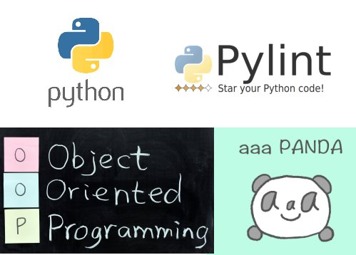

In this site you will find:
-tips and tricks to new python programmers to implement pylint
-a glossary of OOP terms with definitions
-a tutorial that demonstrates AAA testing with Python
-principles of object-oriented programming
-a separation of concerns example
All you have to do is click Learn More in the top menu.